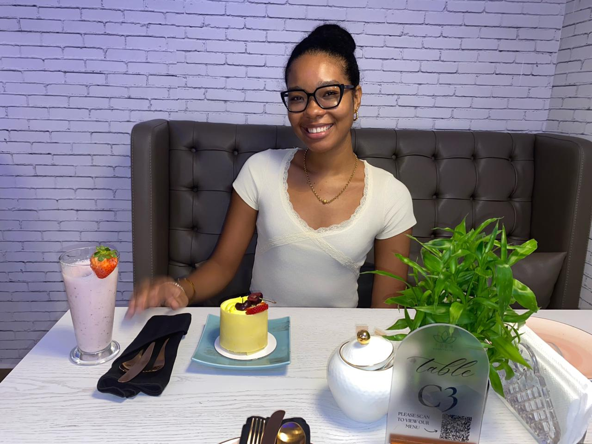

Slimme verkeerslichten
Vision Five
Als onderdeel van de projectgroep Vision Five hebben we gewerkt aan een innovatief plan voor slimme verkeerslichten om de doorstroming in Suriname te verbeteren.
Welkom bij Chantelle's Portfolio
Portfolio laden...
Werk & ervaring
Locatie: Dr. Sophie Redmondstraat, Paramaribo
In mijn rol als IT-technicus ben ik dagelijks verantwoordelijk voor het configureren en onderhouden van netwerkinfrastructuren. Ik werk veelvuldig met hardware zoals switches, routers en andere netwerkapparaten.
Projecten
Vision Five
Als onderdeel van de projectgroep Vision Five hebben we gewerkt aan een innovatief plan voor slimme verkeerslichten om de doorstroming in Suriname te verbeteren.
School / praktijk
Basisnetwerkontwerpen maken met routers, switches en gestructureerd denken.
Technische ondersteuning
Probleemoplossing, onderhoud en ondersteuning voor hardware- en netwerkomgevingen.
Aanbevelingen
“Toegewijd, creatief en leergierig. Chantelle combineert technische focus met een positieve houding.”
— Docent / begeleider